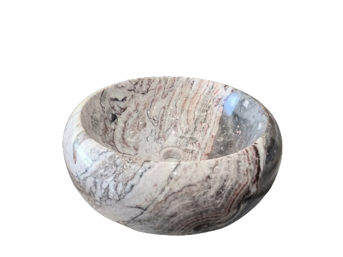
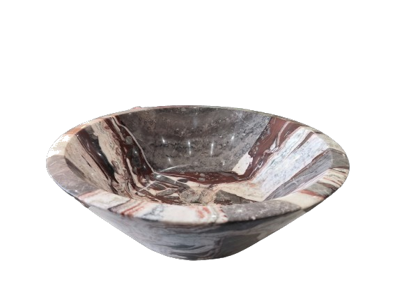
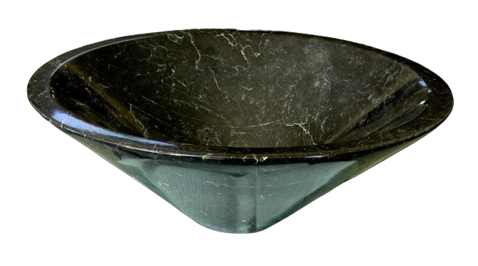
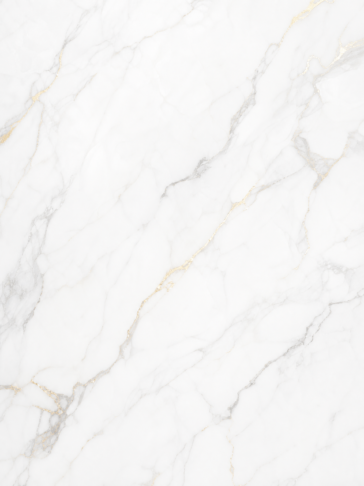
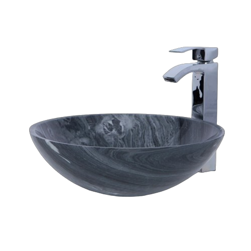
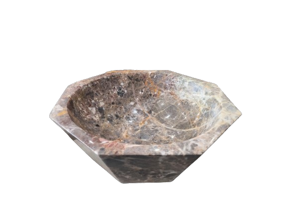
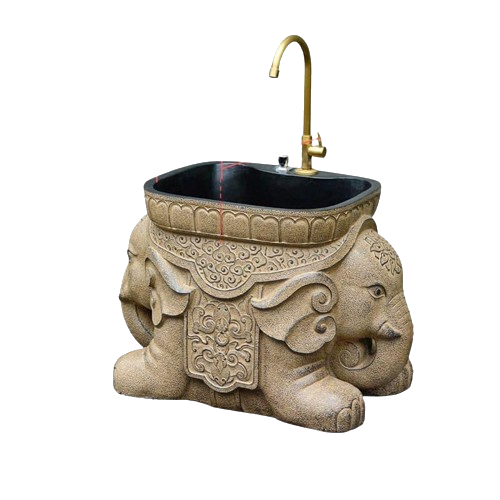
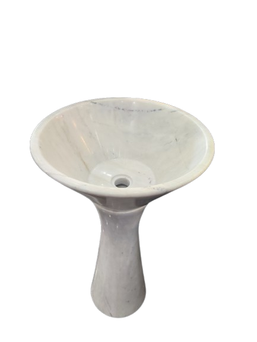
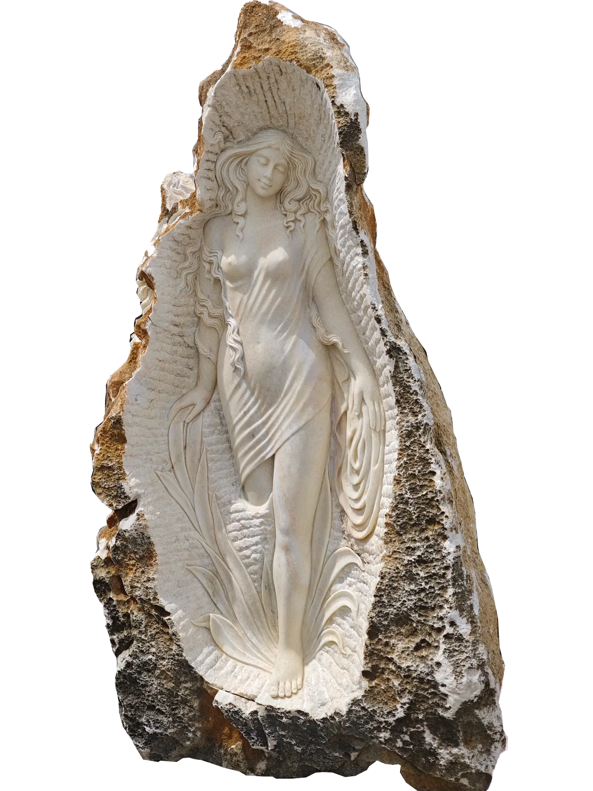
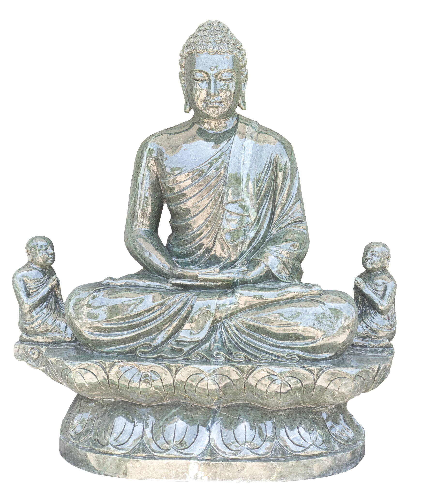

Narava ustvarja edinstvenost. Mi jo pomagamo izraziti. Spoznajte našo zgodbo, izvor naravnega vietnamskega marmorja ter vrhunsko ročno mojstrstvo.
Ime naše blagovne znamke LAPIDOR izhaja iz latinske besede lapis – kamen. Že tisočletja je marmor oblikoval templje, palače in katedrale ter meščanske rezidence ter postal neprekosljiv simbol trajnosti, lepote in brezčasnosti. Danes isto izjemno dediščino prinaša v sodobne prostore, ki jih ustvarjate vi.


Vsak kos marmorja LAPIDOR je zgodba zase. Nastajal je milijone let globoko v zemeljskih plasteh, oblikovan skozi neponovljive naravne procese, ki ustvarjajo edinstvene vzorce, kristalne odtenke in strukture. Nobena plošča ni enaka drugi – vsak kos nosi svojo značilno risbo narave in prav ta neponovljivost daje vsakemu prostoru značaj.
Naš marmor izvira iz skrbno izbranih nahajališč v osrčju Vietnama, kjer narava ustvarja materiale izjemne čistosti (nad 99% kalcijevega karbonata) in fizikalne odpornosti. Vsak blok je izbran z največjo pozornostjo do strukturne čistosti, barvne harmonije in dolgoročne obstojnosti.


Vsak izdelek LAPIDOR je unikaten. Naravni vzorci in odtenki nastajajo skozi milijone let, naši mojstri pa jih spremenijo v unikatne elemente po meri posameznega projekta.
Vsak kos nastaja pod rokami izkušenih mojstrov. Ročna obdelava zahteva znanje in občutek za naravni kamen, ki ga sodobna tehnologija ne more v celoti nadomestiti.
Ponujamo skrbno izbran izbor naravnega marmorja različnih barv in struktur – od brezčasnih belih odtenkov do izrazitejših barvnih različic.
Marmor v domu ni zgolj površina – je element, ki prostoru podari značaj, eleganco in trajno vrednost. Poleti prijetno hladi pod bosimi stopali, skozi leta pa pridobiva žlahtno patino, ki pripoveduje zgodbo doma. Marmor ni izbira za trenutni trend, temveč izbira za prostore, ki ostanejo.
Edinstvena risba plošč ustvari kuhinjo z lastnim značajem. Združuje brezčasno lepoto in funkcionalnost.
Naravni vzorci in masivne kadi spremenijo kopalnico v prostor miru, obreda in sprostitve.
Marmor kot osrednji arhitekturni poudarek, ki ostaja del doma skozi generacije.


V svetu, kjer je počitek postal luksuz, marmor ostaja prvi izbor za prostore, namenjene regeneraciji. Njegova naravna hladnost pomirja, izjemno nizka poroznost in odpornost na vlago pa zagotavljata dolgoročno funkcionalnost v SPA ter wellness ambientih.


Marmor je bil od nekdaj material kiparjev in umetnikov. Iz njega so nastajale skulpture, ki so preživele stoletja. V LAPIDOR-ju ohranjamo to tradicijo skozi sodelovanje z izkušenim klesarskim mojstrom, ki naravni kamen spreminja v unikatne kiparske mojstrovine – od abstraktnih form do sakralnih plastik.


Poskrbimo za celotno pot – od osebnega predlaganja in vzorčenja naravnega marmorja do varne logistike in natančne klesarske izvedbe.